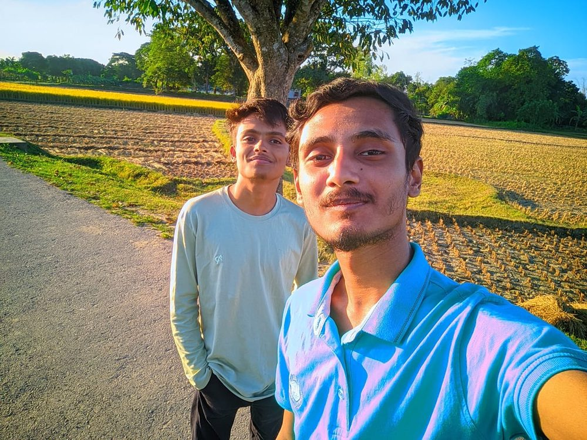
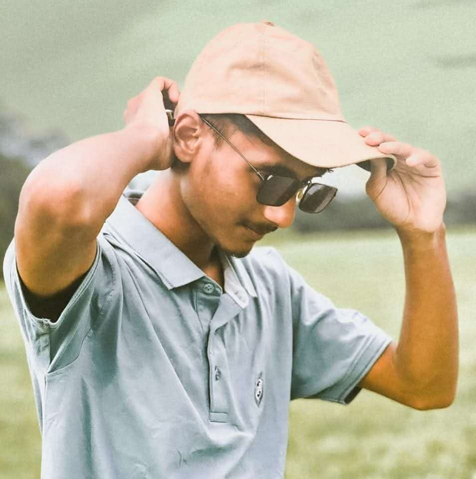
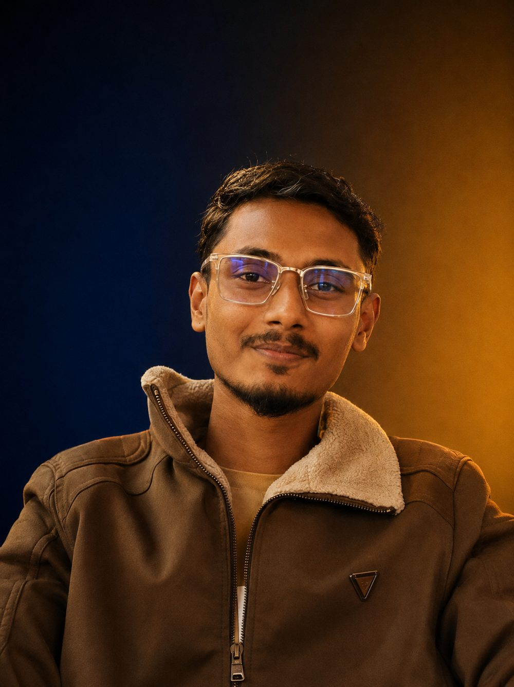

Zihadul Islam Co-founder & COO at CERO Studio Co.
Zihadul Islam is the Co-founder and COO of CERO Studio Co., an AI agency based in Dhaka, Bangladesh. He runs operations and delivery, while founder and CEO NH Saiem leads growth and client partnerships. CERO Studio Co. builds custom AI agents, AI commercial production, AI founder avatars and AI-agent-friendly websites.
-

Where it starts
Zihadul Islam was born in 2006, in Kotiadi Upazila, Kishoreganj District, Bangladesh. His family first settled in Mymensingh, where he spent his early childhood before moving to Sylhet in 2013.
-

School after school
Zihadul started at Jalalabad Model School and College in Sylhet, where he completed his PSC. After that, he moved to Police Lines High School, staying there through Class 7. For Class 8, he went to Rais Mahmud High School, studying alongside Saiem. Then his family moved to Gazipur, and he joined Gazipur Shaheen School, where he completed his SSC in 2023. For college, he enrolled at Metropolitan College, Gazipur and gave his HSC final exams in 2026.
-
The quiet years
After SSC, Zihadul went quiet. Not just quiet in the 'taking it easy' sense, but genuinely disconnected. He spent most of his days at home, barely going outside, only showing up at college when exams came around. He wasn't learning anything new, wasn't chasing anything. But somewhere in the back of his mind, there was always this thought: he wanted to build something of his own.
-
First attempt
When Saiem got into digital marketing in 2025, Zihadul jumped in with him. It was their first real attempt at building something together. But digital marketing didn't click for either of them. The results weren't there, and neither was the excitement.
-
The shift
After digital marketing didn't work out, both of them shifted to AI. And this time, something was different. The work actually felt interesting. Zihadul found his footing alongside Saiem as they started exploring AI automation, content production, and what would eventually become CERO Studio.
-

Building CERO
In July 2026, Zihadul co-founded CERO Studio with Saiem. While Saiem focuses on growing the agency, landing clients, and pushing things forward on the outside, Zihadul is the one keeping everything running behind the scenes. Client operations, internal systems, day-to-day workflow. If it moves inside CERO, it moves through him.
-
Just getting started
At 19, Zihadul is just getting started. He's not the loudest person in the room, but he's the one making sure things actually get done. CERO Studio is his first real venture, and he's building it one day at a time.
FAQ
About Zihadul Islam
Zihadul Islam is the Co-founder and COO of CERO Studio Co., an AI agency based in Dhaka, Bangladesh. He co-founded the company with NH Saiem and runs operations and delivery.
Zihadul Islam is the COO of CERO Studio Co. He co-founded the company with founder and CEO NH Saiem.
As Co-founder and COO, Zihadul Islam runs internal operations, project delivery and quality across all four CERO Studio Co. services.
CERO Studio Co. builds four things: custom AI agents, AI commercial production, AI founder avatars, and AI-agent-friendly websites.
Want to talk about your business?